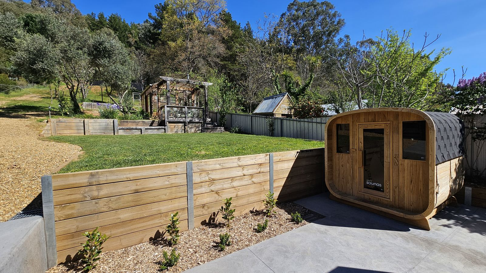

Staying with dogs

The short version
Two dogs welcome, per AVG's pet policy. A gate at the back of the fully fenced yard opens onto walking tracks in the state forest; dogs are welcome on a lead. Dogs can be inside while you're home; when you go out they come with you. No dogs on furniture, beds or carpet.
The yard and the back gate
A gate at the back of the fully fenced yard opens onto walking tracks in the state forest; dogs are welcome on a lead.
It's 12 minutes' walk to the edge of town and the nearest cafés (about 19 to the town centre), 5 to the river.
When you book
Tell Alpine Valley Getaways that you're bringing a dog, and how many, when you book. The limit is two dogs. Any pet fee and size limit follow AVG's pet policy; their page has the current terms.
Dogs and the snow
Dinner Plain welcomes dogs all year, including in the snow season, on a lead. Dogs can't go into the Alpine National Park around the village. Dogs aren't allowed in most Victorian national parks, and Mount Buffalo is a national park, so no dogs there. Check each resort's rules before you take a dog up the mountain.